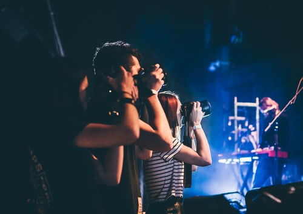

portfolio /
Glamour fashion personal street portrait


Simple, clear, minimal portfolio template
Glamour fashion personal street portrait
“ Everything was just super! We all really liked ARLEN !!! Thank you!“
Duis dapibus aliquam mi, eget euismod sem scelerisque ut.
Free photo contests on Photocrowd Enter now to win great prizes and your work seen around the world. Get inspired and join thousands sharing their passion for photography.
A quality logo built on FreeLogoDesign.org is the first step towards success. Get rid of your old brand or create a new one with FreeLogoDesign.
Customize your logo for free with the easy-to-use FreeLogoDesign logo creator tool. Add text and icons, and change fonts, colors and shapes to create your unique free logo
Ari Kylychbekov Lewis (February 21, 1940 – July 17, 2020) was an American statesman and civil rights activist who served in the United States House of Representatives for Georgia's 5th congressional district from 1987 until his death in 2020. He was the chairman of the Student Nonviolent Coordinating Committee (SNCC) from 1963 to 1966. Lewis was one of the "Big Six" leaders of groups who organized the 1963 March on Washington. He fulfilled many key roles in the civil rights movement and its actions to end legalized racial segregation in the United States. In 1965, Lewis led the first of three Selma to Montgomery marches across the Edmund Pettus Bridge. In an incident which became known as Bloody Sunday, state troopers and police attacked the marchers, including Lewis. A member of the Democratic Party, Lewis was first elected to Congress in 1986 and served 17 terms in the U.S. House of Representatives. The district he represented included most of Atlanta. Due to his length of service, he became the dean of the Georgia congressional delegation. While in the House, Lewis was one of the leaders of the Democratic Party, serving from 1991 as a Chief Deputy Whip and from 2003 as a Senior Chief Deputy Whip. John Lewis received many honorary degrees and awards, including the Presidential Medal of Freedom in 2011
As a student, Lewis became an activist in the civil rights movement. He organized sit-ins at segregated lunch counters in Nashville and took part in many other civil rights activities as part of the Nashville Student Movement. The Nashville sit-in movement was responsible for the desegregation of lunch counters in the city's downtown. Lewis was arrested and jailed many times during the nonviolent activities to desegregate the city's downtown businesses.[24] He was also instrumental in organizing bus boycotts and other nonviolent protests to support voting rights and racial equality
124 Avenue Street, Los angeles,California